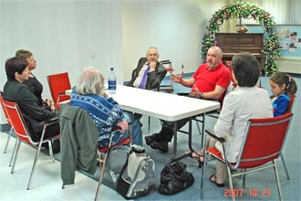
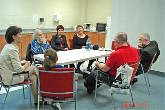

|
Начало
|
| 21 октября 2007 года мы начали, вернее продолжили, русские собрания тех душ, кто в
прошлом были в церкви Northview Community Church. Учитывая ситуацию мы начали собрания в формате Bible study (изучения Библии). Нас пока мало на полномасштабное собрание а вот изучать Библию можно и вдвоем. |
|  |  |
| На первой встрече мы обсудили коротко обстановку и решили перейти от изучения
Библии по главам к изучению по темам. Тут же обрисовались темы, которые волновали всех, но одна
была очень актуальна на сегодня: исцеление Иисуса Все мы грешим (увы!) часто не намеренно, но тяжесть греха от того не меньше. А если грешим, то болеем. Физически или духовно - это различие чисто условное. Всем нам нужен врач и самый главный врач, это конечно Иисус Христос! Итак, на следущее воскресенье тема определена! |